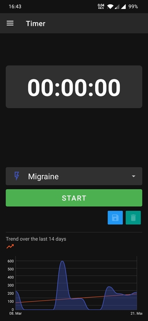
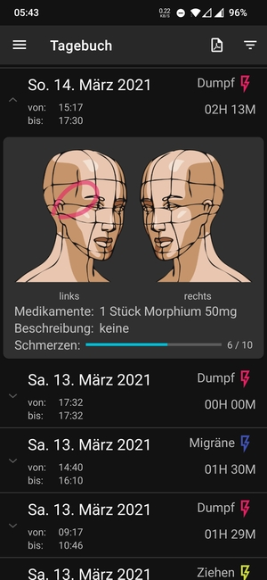
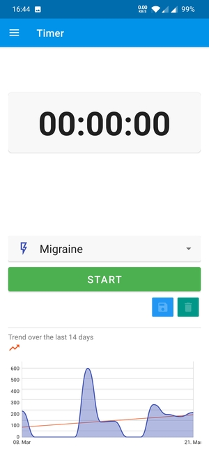
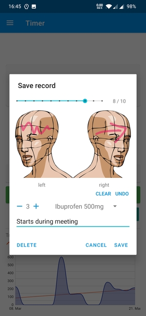
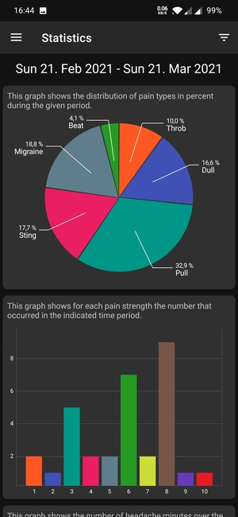
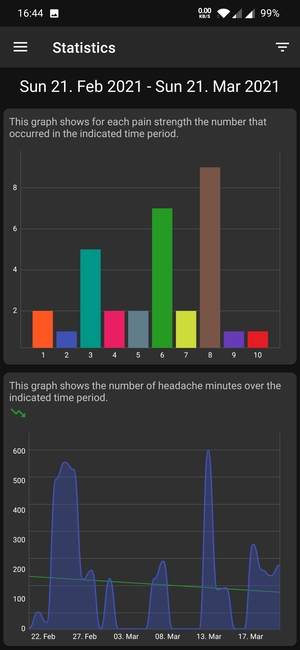
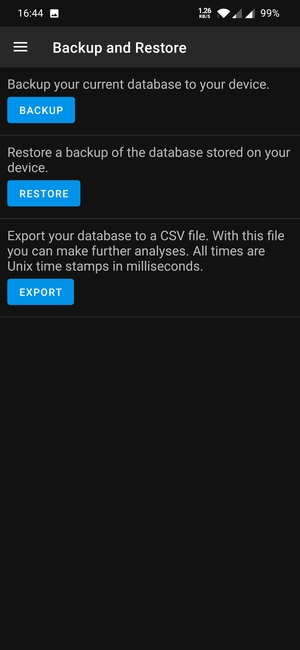

In den letzten zwei Monaten habe ich neben Arbeit und Familie meine erste Android-App gebaut. Der Antrieb dazu war privater Natur und ich habe keinerlei kommerzielle Interessen daran. Ich möchte hier kurz meine Arbeit mit euch Teilen.
Headi (Headache Diary) ist eine App um Kopfschmerzen zu protokollieren. Da es sich dabei um sehr sensible Daten handelt, werden keine Daten an irgendwelche Cloud-Dienste übertragen. Alle Daten werden nur lokal gespeichert. Headi benötigt auch keinerlei Berechtigungen vom Benutzer. Headi bietet eine einfache Analyse der aufgezeichneten Daten. Die Aufzeichnungen können als CSV-Datei zur weiteren Analyse der Daten oder als PDF Dokument exportiert werden. Um ein Backup zu erstellen, kann die komplette Datenbank gespeichert werden. Es war mit sehr wichtig, die Daten so einfach wie möglich exportieren zu können.
Damit sicher keine Daten im Internet landen, habe ich auch das von Android angebotene automatische Backup allowBackup ab der Version 1.10.1-beta deaktiviert. Die Version 1.10.1-beta sollte in einigen Tagen im F-Droid Store erscheinen.
<manifest ... >
...
<application android:allowBackup="false" ... >
...
</application>
</manifest>
Ich habe die App, dank wertvollen Tipps einiger Redakteure, im F-Droid Store veröffentlicht. In einem weiteren Artikel möchte ich zu einem späteren Zeitpunkt noch die Veröffentlichung im F-Droid Store beleuchten. Allerdings ist die App noch nicht vollständig getestet. Auch gibt es sie erst in deutscher und englischer Sprache.
Es wäre schön, wenn einige von euch die App Installieren würden, und die Funktionen durchtesten oder die App gleich Einsetzten. Feedback und Bug Reports können auf der GitHub Projektseite https://github.com/MrReSc/Headi hinterlassen werden.

Headi ist ein Open-Source-Projekt. Die App steht unter der MIT Lizenz. Wenn du auch etwas dazu beitragen wills, würde ich mich sehr darüber freuen. Folgend findest du einige Ideen, was du beitragen könntest:
Wenn du Hilfe benötigst um einen Beitrag zu Leisten, melde dich doch bei mir.
  
  
